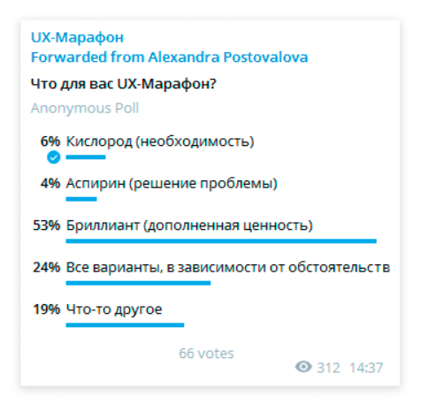

В бизнес-книгах пишут, что важно понимать, чем ваш продукт является для клиентов. Нам самим это стало очень интересно, и мы инициировали исследование, чтобы получить ответы от пользователей.
Подписчикам Telegram-канала
UX-Марафон
и
UX-чата
мы предложили определить, чем является для них наша конференция – чем-то жизненно необходимым (кислород), средством для решения конкретной проблемы (аспирин) или дополненной ценностью (бриллиант).
Кстати, именно третий вариант (бриллиант) выбрали более половины участников опроса в Telegram (53%). За варианты «кислород» и «аспирин» проголосовали соответственно 6% и 4% опрошенных, ещё 19% отметили пункт «что-то другое», а 24% – «все варианты, в зависимости от обстоятельств».

- Когда я судорожно ищу инфу по текущему вопросу – это кислород. Когда иду на марафон не совсем по своей теме, «на вырост» – бриллиант)) А когда в телеге задаю вопрос – аспирин, – прокомментировала свой выбор одна из участниц UX-Марафона.
В сообществе
UX Club
на Фейсбуке (22К+ участников), где аудитория опроса была более широкой, мы дополнили список ответов вариантом «не знаю, не посещал UX-Марафоны». Кроме того, члены сообщества могли добавить свои варианты ответа. Посмотрим, что из этого получилось (по мере убывания популярности):
-
Не знаю, не посещал UX-Марафоны – 53 голоса
-
Сообщество UX-подкованных людей, рассказывающих о своей сфере – 30 голосов
-
Бриллиант (дополненная ценность) – 7 голосов
- База знаний/кейсов – 4 голоса
-
Бизнес по окучиванию начинающих дизайнеров – 4 голоса
-
Возможность узнать кухню крупных проектов, познакомиться с мастерами и быть актуальным – 3 голоса
-
Что-то другое – 3 голоса
-
Аспирин (решение проблемы) – 1 голос
Таким образом, большинство из тех участников опроса в группе UX Club, кто уже имеет представление об UX-Марафонах, рассматривают нашу онлайн-конференцию в первую очередь как сообщество специалистов, которые делятся своим профессиональным опытом. Для кого-то это база новых знаний и интересных кейсов, кому-то важна возможность заглянуть «за кулисы» крупных проектов или отслеживать самые современные тренды в сфере UX.
Нашлись и критики, считающие, что онлайн-конференция – это всего лишь «бизнес по окучиванию начинающих дизайнеров». С последним, правда, трудно согласиться, учитывая профессиональный уровень многих участников конференции, квалификацию спикеров и темы, которые мы выбираем для наших UX-Марафонов.
Вот и для очередной онлайн-конференции, которая состоится уже в следующий четверг, 28 января, мы выбрали достаточно сложную, но интересную и важную для каждого UX-специалиста тему информационной архитектуры. Если вы хотите познакомиться с инструментами и кейсами в сфере ИА и освоить базовые приёмы её проектирования – добро пожаловать на
UX-Марафон #22!
Обратите внимание – мы дарим 25% скидку на билет на UX-Марафон «Информационная архитектура» за публикацию о событии! Напишите у себя в соцсетях или в рабочем чатике, почему вы хотите пойти на эту конференцию, опубликуйте ссылку
https://ux-marafon.ru/new
и пришлите скрин в Телеграм @alexapost
До встречи 28 января в прямом эфире!
Программа и билеты